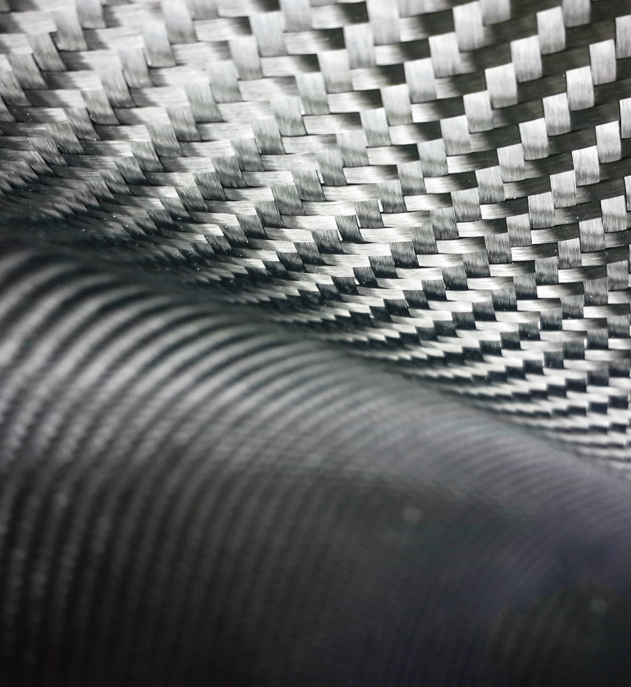

College Of Engineering • 공과대학

|
유/무기 신소재, 카본나노소재, 에너지/환경소재, 미래융복합소재,
반도체소재, 사물인터넷소재
|
|
신소재공학과
DEPARTMENT OF ORGANIC MATERIALS AND FIBER ENGINEERING
|
|
 materials.ssu.ac.kr
materials.ssu.ac.kr
|
 02-820-0620
02-820-0620
|
|
학과 설립
1968 년
|
입학 정원
94 명
|
교직과정 개설여부
o
x
|
전임교원
14 명
|
학과 소개
신소재공학은 미래 핵심기술인 반도체기술, 에너지기술, 친환경기술, 나노기술
분야의 기반이 되는 신소재 개발을 공부하는 학문이다. 숭실대학교 신소재공학과
는 50년이 넘는 역사를 갖고 있으며, 나노기술을 기반으로 한 유기 신소재 합성,
구조·물성, 프로세싱, 반도체 및 전자소재-소자, 탄소 재료, 바이오 소재, 친환경 및
에너지 소재, 센서·AI전산설계 등의 신소재 분야 전반에 대한 교육 및 연구에 전력을
다하고 있다.
학과 인재상
전공분야의 첨단 학문연구와 실용적 응용기술을 갖춘 인재
창의적 능력으로 시대적 변화에 부응할 수 있는 창조적 인재
주요 커리큘럼
물리화학, 유기화학, 무기화학, 재료역학, 고체물리, 고분자공학, 금속공학, 세라믹공학,
계면과학, 재료상변태, 유기신소재합성, 반도체공학, 반도체공정, 에너지소재,
바이오소재, 재료결정학, AI전산재료과학, 유기소재구조와 물성, 고분자프로세싱, 나노복합소재,
섬유전자공학, 기기분석
선택교과 가이드
일반선택
수학Ⅰ, 수학Ⅱ, 미적분, 확률과통계, 물리학Ⅰ, 화학Ⅰ
동아리 및 소모임 소개
USP(축구), DUE(취업-일반취업 준비), WBMD(취업-머천다이저분야 취업 준비),
신우회(종교), 유기농(농구)
학과 특색 프로그램
유기신소재 콜로퀴엄, 각 연구 분야 실험실 및 학부연구생 운영, 융합전공(스마트소
재/ 제품, 에너지공학, 스마트자동차), 산업체 견학 프로그램, 진로지도교수제, 학과
장학제도
우수 학생 및 학과 성과
2018년 제1회 대학생 창의력 아이디어 경진대회 대상 수상
2018년 제 2회 효성 친환경 아이디어 공모전 아이디어 부문 우수상 수상
2019년 대학창의발명대회 한국발명진흥회장상 수상
졸업 후 진로
재료, 화학, 고분자, 반도체, 배터리, 철강, 세라믹, 파이버 관련 기업 및 연구소 취업, 진학(대학원,유학)
기능성유기소재, 섬유가공, 부직포 제조공정, 고성능 부직포필터, 의료위생용섬유,
전달현상, 유기소재가공및분석, 천연섬유재료공학, 패션마케팅, 의류생산관리,
나노탄소재료, 나노일렉트로닉스재료, 고분자합성, 나노하이브리드재료, 기능성 초분자
재료, 유기재료구조-물성, 의복과학, 차세대 반도체소재, 사물인터넷소자, 전산재료
과학, 기능성 나노전자재료, 무기나노입자 합성 및 전자현미경 분석, 유무기
페로브스카이트 및 유기전자재료 및 소자, 기능성고분자합성 및 자가조립
Q 신소재공학과는 어떤 학생들이 지원해야 할까요?
A
기본적으로 수학과 과학, 특히 화학에 대한 관심과 열정이 있는 학생이면
좋습니다. 신소재공학과는 이런 기초학문을 토대로 융합하고 활용하고 창조적으로
학습하고 개발하는 인재를 기르고자 하는 학과입니다. 따라서 수학과 과학에 대한
기초적인 학문을 뛰어넘어 창의적이고 융합적인 역량을 기르고자 하는
학생들이 지원하고 도전하면 좋겠습니다.